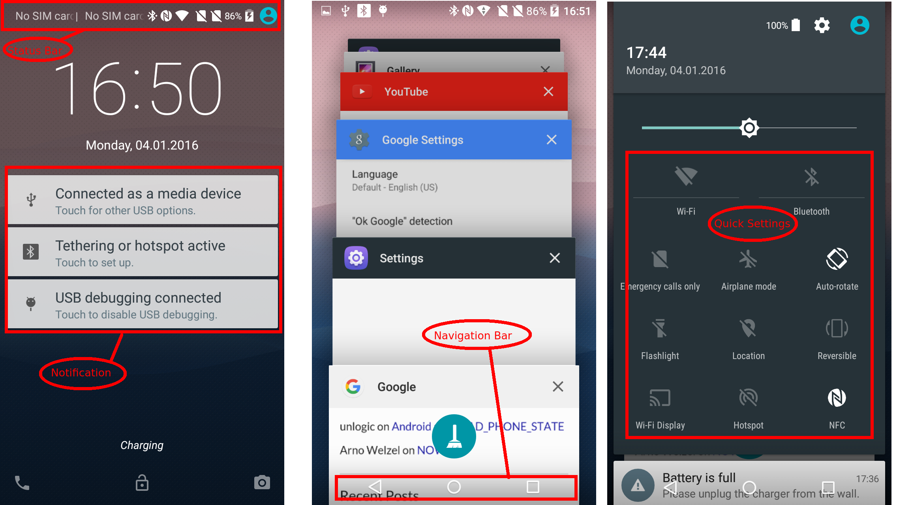
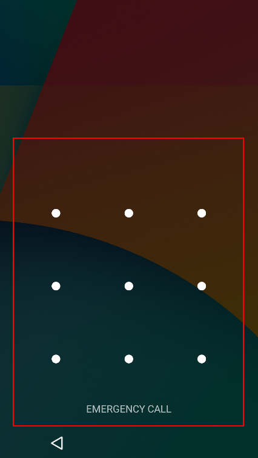
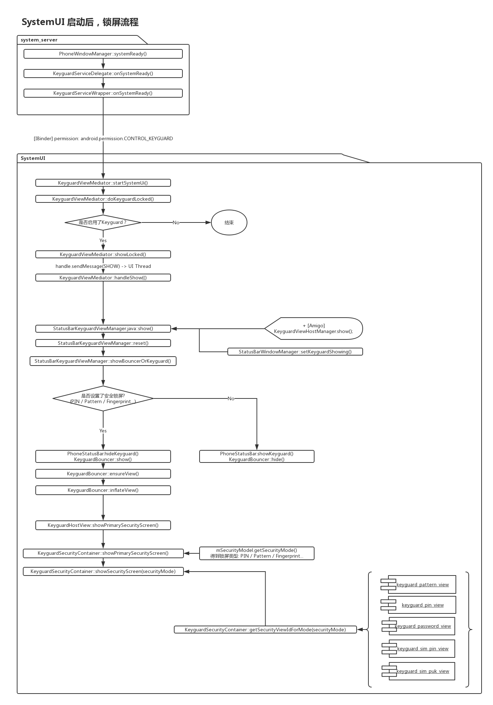
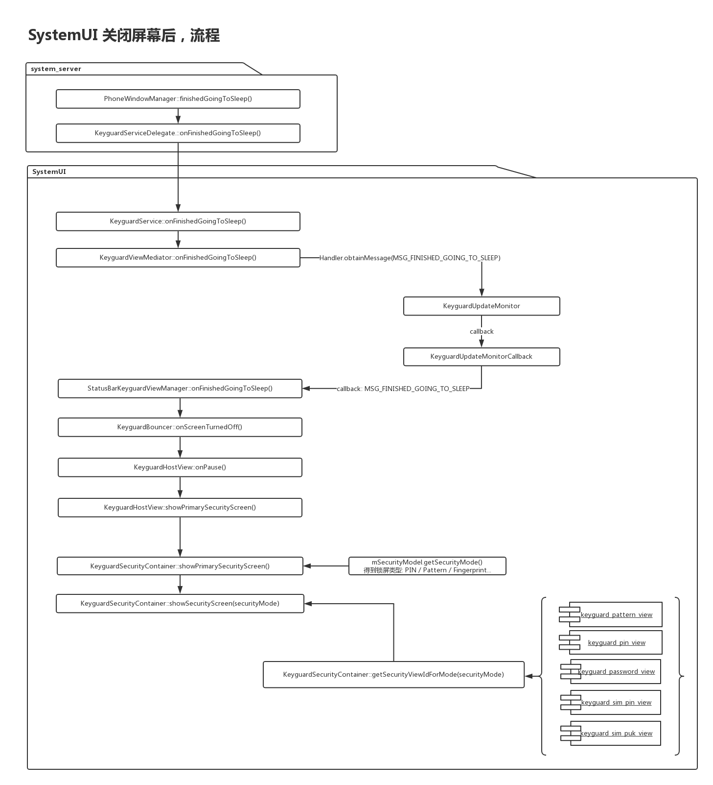
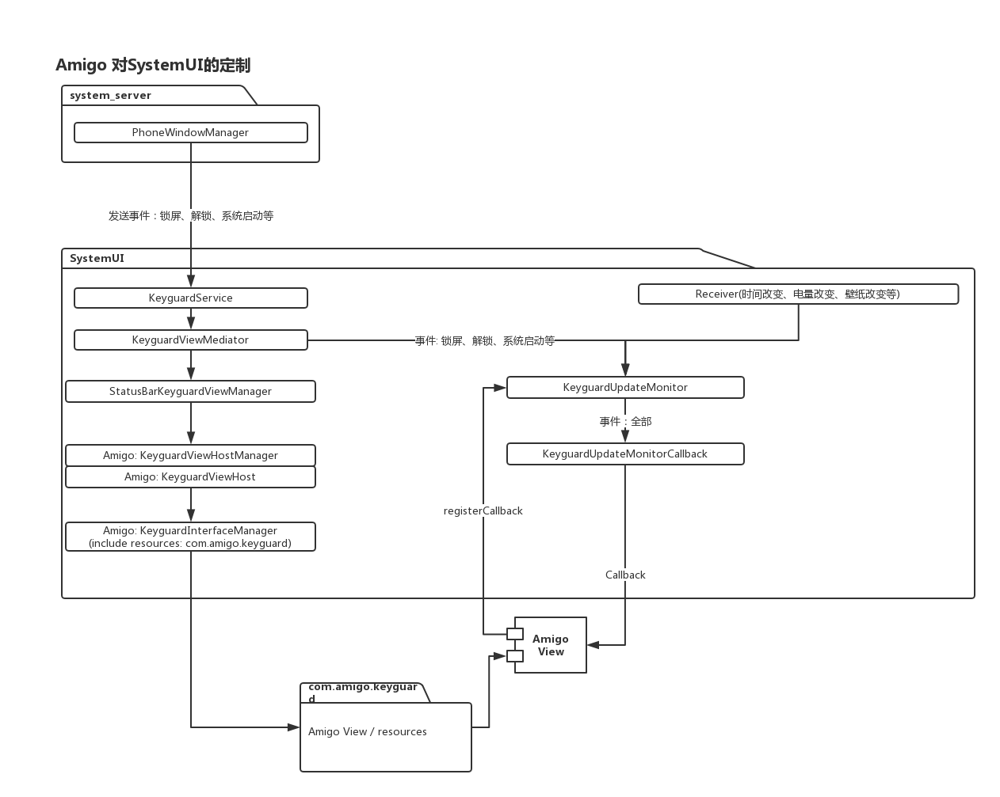
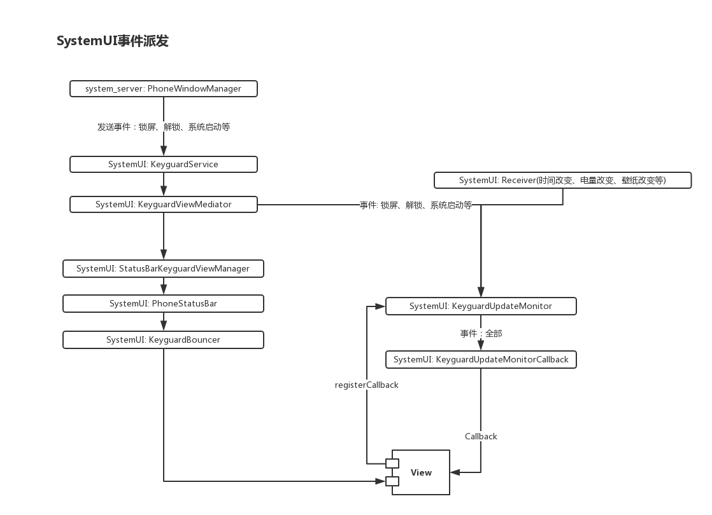
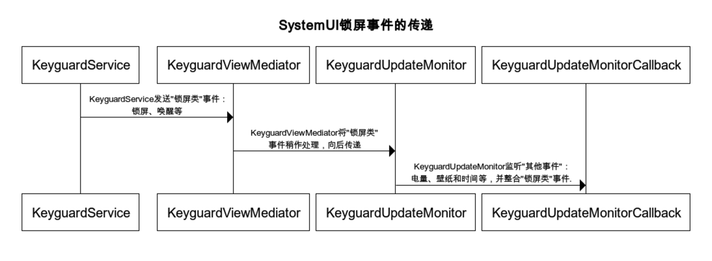

Android SystemUI & Keyguard原理分析，加个“摇一摇”解锁
基本知识
本文的所有分析都基于Android 7.0.
Keyguard
系统中并不存在Keyguard这个应用，Keyguard实际上是com.android.systemui中的一个静态库，这个库主要负责跟锁屏解锁相关业务。
SystemUI
系统应用com.android.systemui负责跟UI相关的显示工作,比如：StatusBar(状态栏)、NavigationBar(导航栏)等、通知栏(Notification)等等.其中也包含锁屏部分的功能.
A、SystemUI
本节以某国产手机为目标进行Keyguard的分析
一、快速认识Keyguard

SystemUI布局
FrameLayout
|— keyguard_host_view (安全解锁)
|— keyguard_security_container
|— — view_flipper
|— — — keyguard_pattern_view / keyguard_pin_view (不同解锁方式)
FrameLayout
|— panel_holder (通知区域：锁屏状态 与 通知栏下拉状态)
|— — notification_panel (通知栏区域)
|— — — notification_container_parent
|— — — — scroll_view
|— — — — — LinerLayout
|— — — — — — quick_settings_container
|— — — — — — reserve_notification_space
|— — — — notification_stack_scroller
|— — — — — FrameLayout (一个通知项)
|— — — — — — backgroundNormal
|— — — — — — expanded
|— — — — — — — status_bar_latest_event_content
|— — — header (通知栏上方区域)
|— — — keyguard_header (锁屏状态下通知栏上方区域)
|— — — — clock
|— — — — date_group
|— — — — system_icons_super_container
|— — — — multi_user_switch
|— scrim_behind
|— scrim_in_front
|— status_bar (状态栏)
|— — center_clock_layout
|— — status_bar_contents
|— — — notification_icon_area
跟锁屏相关的重要的类
KeyguardViewMediator
负责代处理SystemUI的所有和界面有关的操作，所有到此的调用都会转为UI线程。该类主要被KeyguardService调用。
其有一个启动锁屏的关键函数doKeyguardLocked(), 该函数内会检测是否开启了锁屏功能，如果没有开启则直接return。
StatusBarKeyguardViewManager
负责处理锁屏的所有操作，但该类也会负责显示解锁View(PIN、Pattern、Fingerprint)。其中doKeyguardLocked()负责进行锁屏，而这些操作最终依赖KeyguardBouncer。该类主要被KeyguardViewMediator调用。
KeyguardUpdateMonitor 负责监控各类事件，电量指纹等事件外，该类还整合KeyguardViewMediator传来的事件整合为一个事件全集。如：电量、壁纸、指纹解锁等等所有跟锁屏有关的事件均可以在此找到。 所有希望监听事件的都需要需要通过registerCallback()进行注册.
KeyguardBouncer 负责具体执行安全锁屏的操作，包括锁屏UI的加载，解锁等。
KeyguardHostView 为锁屏界面的绑定类： R.id.keyguard_host_view，其继承自：FrameLayout，implements SecurityCallback。keyguard_host_view对应如下区域:

二、启动流程
**1. SystemUI不同于普通的APP, 在AndroidManifest.xml中没有找到类似于android.intent.category.LAUNCHER这样供外部调用的接口. **
但是有一个名为SystemUIService的Service供外部调用，这个接口就是用来启动SystemUI的入口。
<!--xref: frameworks/base/packages/SystemUI/AndroidManifest.xml-->
<application android:allowBackup="false" android:allowClearUserData="false" android:hardwareAccelerated="true" android:icon="@drawable/icon" android:label="@string/app_label" android:largeHeap="true" android:name=".SystemUIApplication" android:persistent="true" android:process="com.android.systemui" android:supportsRtl="true" android:theme="@style/systemui_theme">
<meta-data android:name="supporticon" android:value="true" />
<service android:exported="true" android:name="SystemUIService" /> <!--入口点，被system_server调用-->
<service android:exported="true" android:name="com.android.systemui.gionee.GnStatusBarService" />
<service android:exported="true" android:name="com.android.systemui.usb.GnOtgService" />
<service android:exported="false" android:name=".screenshot.TakeScreenshotService" android:process=":screenshot" />
<service android:exported="true" android:name=".LoadAverageService" />
2. 系统启动后system_server$StartSystemUI()会调用SystemUI$SystemUIService从而启动SystemUI. 而StartSystemUI()则由喜闻乐见的startOtherServices()调用：
// xref: frameworks/base/services/java/com/android/server/SystemServer.java
static final void startSystemUi(Context context) {
Intent intent = new Intent();
intent.setComponent(new ComponentName("com.android.systemui",
"com.android.systemui.SystemUIService"));
intent.addFlags(Intent.FLAG_DEBUG_TRIAGED_MISSING);
//Slog.d(TAG, "Starting service: " + intent);
context.startServiceAsUser(intent, UserHandle.SYSTEM);
}
3. SystemUIService启动后，会轮流start各种模块，用于监听系统的各种状态:
// xref: frameworks/base/packages/SystemUI/src/com/android/systemui/SystemUIApplication.java
private final Class<?>[] SERVICES = new Class[] {
com.android.systemui.tuner.TunerService.class,
com.android.systemui.keyguard.KeyguardViewMediator.class, // 初始化锁屏相关的UI，声效等
com.android.systemui.recents.Recents.class,
com.android.systemui.volume.VolumeUI.class, // 注册音量相关回调(以便能够响应音量调整事件)
Divider.class,
com.android.systemui.statusbar.SystemBars.class, // 监控并启动状态栏
com.android.systemui.usb.StorageNotification.class,
com.android.systemui.power.PowerUI.class, // 监控电源相关信息，如电量改变，充电状态或低电量模式改变等
com.android.systemui.media.RingtonePlayer.class, // 注册铃声播放回调
com.android.systemui.keyboard.KeyboardUI.class, // 监控物理键盘的连接
com.android.systemui.tv.pip.PipUI.class,
com.android.systemui.shortcut.ShortcutKeyDispatcher.class, // 物理键盘快捷键
com.android.systemui.VendorServices.class
};
4. 重点关注KeyguardViewMediator部分，跟进start()：
// xref: frameworks/base/packages/SystemUI/src/com/android/systemui/keyguard/KeyguardViewMediator.java
@Override
public void start() {
synchronized (this) {
setupLocked(); // <--初始化跟锁屏相关的信息
}
putComponent(KeyguardViewMediator.class, this);
}
5. 进入setupLocked()， 这里初始化一些信息。比较重要的是mUpdateMonitor与mStatusBarKeyguardViewManager两个成员的初始化，后续的界面更新和事件传递全部依靠这两个对象进行:
// xref: frameworks/base/packages/SystemUI/src/com/android/systemui/keyguard/KeyguardViewMediator.java
private void setupLocked() {
// ...
mAlarmManager = (AlarmManager) mContext.getSystemService(Context.ALARM_SERVICE);
mUpdateMonitor = KeyguardUpdateMonitor.getInstance(mContext); // 创建事件监控
// ...
mStatusBarKeyguardViewManager = // 创建UI管理器
SystemUIFactory.getInstance().createStatusBarKeyguardViewManager(mContext,
mViewMediatorCallback, mLockPatternUtils);
// ...
String soundPath = Settings.Global.getString(cr, Settings.Global.LOCK_SOUND); // 载入锁屏声音
// ...
soundPath = Settings.Global.getString(cr, Settings.Global.UNLOCK_SOUND); //载入解锁声音
// ...
}
三、首次锁屏事件

开机显示keyguard的总结：
1、在KeyguardViewMediator.java的onSystemReady()方法内调用doKeyguardLocked()开始锁屏加载流程;
2、setKeyguardEnabled();其他应用程序或者服务可以调用setKeyguardEnabled()方法请求禁止锁屏;
3、KeyguardViewMediator.java在keyguard中起着主要调度的作用，主要负责
1）查询锁屏状态，当前是锁屏还是解锁状态;在锁屏状态下，会限制输入事件。
2）PhoneWindowManager.java通过mKeyguardDelegate对象(KeyguardServiceDelegate.java)来使能KeyguardViewMediator.java，调用其中的方法;
3）响应SIM卡状态变化并对锁屏界面做相应的调整onSimStateChanged();
4、判断keyguard是否被禁止、keyguard当前是否正在显示等等即当前是否可以显示keguard，可以显示的话继续调用showLocked()方法;
5、调用handleShow()方法，调用StatusBarKeyguardViewManager.java的show()开始显示keyguard锁屏界面;
6、调用reset()方法，调用showBouncerOrKeyguard()方法判断是显示正常锁屏界面还是安全锁屏界面;显示正常锁屏的话直接调用PhoneStatusBar.java的showKeyguard()或者hideKeyguard()方法;如果显示安全锁屏界面的话则调入KeyguardBouncer.java类内;
7、调用KeyguardBouncer.java的show()方法;使用ensureView()方法去加载实例化布局;调用KeyguardHostView.java的showPrimarySecurityScreen()方法去显示安全锁屏界面; 8、KeyguardHostView.java的showPrimarySecurityScreen()方法会调入到KeyguardSecurityContainer.java的showPrimarySecurityScreen()方法中来;
9、调用showSecurityScreen()方法，根据锁屏方式来加载不同的锁屏view;
10、KeyguardSecurityView.java是一个接口类，其内部方法都是抽象的只有声明没有实现，其方法实现都是在继承于这个接口的类中。
而在keyguard中主要是KeyguardAbsKeyInputView.java、KeyguardPasswordView.java、KeyguardPatternView.java等等Keyguard*View.java这些类继承于此接口实现其内部方法，这些类就是具体的锁屏界面view显示;
四、关闭屏幕后的锁屏流程
关闭屏幕后SystemUI会第一时间将锁屏界面准备好，以便用户点亮后能够即使显示。 所以关闭屏幕的第一件事就是进行锁屏。 下图描述了整个过程，在后半段的流程与以上的首次锁屏事件完全一样。

关闭屏幕keyguard流程总结： 1、不管是按Power键还是自动灭屏，都会执行到PowerManagerService.java的gotoSleep()方法; 2、在这个方法内通过一系列的调用，调入到PhoneWindowManager.java的finishedGoingToSleep()方法; 3、在PhoneWindowManager.java类中通过KeyguardServiceDelegate.java类的对象mKeyguardDelegate来使能KeyguardViewMediator.java; 4、而KeyguardViewMediator.java作为keyguard的调度者，从这里开始keyguard的加载; 5、最终在KeyguardSecurityContainer.java的showPrimarySecurityScreen()方法内去实现根据锁屏方式加载锁屏界面;
五、按键屏蔽
当锁屏开启后，HOME、APP_SWITCH按钮全部会失效，这些限制是在PhoneWIindowManager中进行限制的:
// xref: frameworks/base/services/core/java/com/android/server/policy/PhoneWindowManager.java
public long interceptKeyBeforeDispatching(WindowState win, KeyEvent event, int policyFlags) {
// ....
} else if (keyCode == KeyEvent.KEYCODE_APP_SWITCH) {
if (!keyguardOn) { // 是否处于锁屏状态中
if (down && repeatCount == ) {
preloadRecentApps();
} else if (!down) {
toggleRecentApps();
}
}
return -;
}
// ....
} else if ((event.getFlags() & KeyEvent.FLAG_LONG_PRESS) != ) {
if (!keyguardOn) { // 是否处于锁屏状态中
handleLongPressOnHome(event.getDeviceId());
}
}
// ...
}
六、Amigo定制内容

新增HostViewHost Amigo自行增加了一个KeyguardViewHost的类(android原始版本中称为KeyguardHostView)，然后在StatusBarKeyguardViewManager::registerStatusBar()中增加代码来初始化和注册。 并使用新增的KeyguardViewHostManager来对KeyguardViewHost进行操纵，新增的KeyguardViewHost不再由KeyguardBouncer代为操作，而是直接由StatusBarKeyguardViewManager进行。
新增界面资源
Amigo新增的界面资源全部放于一个单独包：com.amigo.keyguard，在SystemUI通过KeyguardViewHost->KeyguardViewHostManager->KeyguardInterfaceManager来加载和操作.
KeyguardInterfaceManager内部最终利用反射来调用com.amigo.keyguard中的逻辑.
指纹解锁的定制
在Android原版本中: 指纹解锁的指纹事件是由FingerprintUnlockController向KeyguardUpdateMonitor::registerCallback()主动注册指纹事件回调，待事件发生后回调其FingerprintUnlockController::onFingerprintAuthenticated()来进行解锁处理.
但在Amigo中: FingerprintUnlockController已被删除，指纹相关处理被回调值Amigo新增的FingerprintManagerExt::handleAuthenticationResult()内(FingerprintManagerExt负责跟隐私空间相关的操作，主要是负责跟FingerprintManager进行交互). 之后如果此指纹属于隐私空间，那么最终将此回调至FingerprintManager::privateCallback()，直接解锁进入到隐私空间.
B、Android SystemUI的事件派发框架
本节基于Android_7.1.1源码进行(android 6与之大同小异)，主要分析整个SystemUI的事件(如：按下关机键、电量改变、解锁成功等)派发框架(顺便指出GIONEE-S10(Amigo)在SystemUI上的一些定制点)。本节不会对指纹、图形锁、密码等鉴权细节做深入，涉及指纹等其他细节将在后续章节中作详细描述。

一、概括
Android中由系统应用com.android.systemui来负责跟UI相关的显示工作, 比如：StatusBar(状态栏)、NavigationBar(导航栏)等.其中也包含锁屏部分的功能. com.android.systemui的大致工作原理是： * 暴露一个service接口.keyguard.KeyguardService给system_server. * 系统的状态发生改变时, 如: 关闭屏幕、解锁成功等. PhoneWindowManager(在system_server中)通过接口将事件通知到com.android.systemui. * 最后SystemUI进行UI元素的绘制和更新.
举例说明：
当system_server中PhoneWindowManager产生了一个事件并通过.keyguard.KeyguardService传递到com.android.systemui后.次消息在com.android.systemui的内部会在以下类中传递：
KeyguardService –> KeyguardViewMediator –> KeyguardUpdateMonitor –> [KeyguardUpdateMonitorCallback_0, KeyguardUpdateMonitorCallback_1, …]
其中:
* KeyguardService : 负责从PhoneWindowManager接收设备的各种状态，比如开始休眠、屏幕关闭等
* KeyguardViewMediator : 提供锁屏相关的控制接口供KeyguardService调用，比如：锁屏、唤醒、被遮盖(来电后、或进入快速拍照模式等)等等。
* KeyguardUpdateMonitor : 用来监听系统的各种状态（例如：电池信息、更换壁纸、时间改变等），同时还会整合KeyguardViewMediator中触发的锁屏信息。总而言之，该类的任务就是整合各个来源的信息，最后形成一个监控器，最后用事件回调来驱动上层UI的更新.
* KeyguardUpdateMonitorCallback: 所有向KeyguardUpdateMonitor注册的事件时都必须提供一个继承自该类的实例(Amigo便是在这里注册了自己的事件回调).
事件类型包含但不限于
- 指纹验证通过/失败
- 电池状态/点亮改变
- 更换壁纸
- 进入休眠
- 关闭屏幕
- 时间改变
Amigo系统便是向KeyguardUpdateMonitor注册了很多回调，以下为监控电池状态的回调：
// Amigo：
KeyguardUpdateMonitor.getInstance(this.mContext).registerCallback(this.mUpdateMonitorCallback); // 注册回调
// ***********************************************************************************************************************
// 回调处理, 监控电量
class com.amigo.navi.keyguard.AmigoKeyguardPageManager$1 extends KeyguardUpdateMonitorCallback {
// ...
public void onRefreshBatteryInfo(AmigoBatteryStatus arg3) {
if(arg3 == null) {
DebugLog.d("AmigoKeyguardPageManager", "BatteryStatus is null");
return;
}
AmigoKeyguardPageManager.-set0(AmigoKeyguardPageManager.this, arg3);
AmigoKeyguardPageManager.-wrap1(AmigoKeyguardPageManager.this, arg3);
}
// ...
}
二、代码分析
1. 我们先以service.jar中的class PhoneWindowManager作为分析的起点
系统启动后PhoneWindowManager::systemBooted()被调用：
// xref: /frameworks/base/services/core/java/com/android/server/policy/PhoneWindowManager.java
/** {@inheritDoc} */
@Override
public void systemBooted() {
//...
if (bindKeyguardNow) {
mKeyguardDelegate.bindService(mContext); // <---- 准备绑定`com.android.systemui/com.android.systemui.keyguard.KeyguardService`
mKeyguardDelegate.onBootCompleted();
}
synchronized (mLock) {
mSystemBooted = true;
}
//...
}
KeyguardServiceDelegate::bindService(), 绑定了SystemUI中的KeyguardService服务(com.android.systemui/com.android.systemui.keyguard.KeyguardService):
// xref: /frameworks/base/services/core/java/com/android/server/policy/keyguard/KeyguardServiceDelegate.java
public void bindService(Context context) {
Intent intent = new Intent();
final Resources resources = context.getApplicationContext().getResources();
final ComponentName keyguardComponent = ComponentName.unflattenFromString(
resources.getString(com.android.internal.R.string.config_keyguardComponent)); // com.android.systemui/com.android.systemui.keyguard.KeyguardService
intent.setComponent(keyguardComponent);
if (!context.bindServiceAsUser(intent, mKeyguardConnection,
Context.BIND_AUTO_CREATE, UserHandle.OWNER)) {
// ........
}
} else {
if (DEBUG) Log.v(TAG, "*** Keyguard started");
}
}
Bind成功后,开始调用KeyguardService的接口来执行一些初始化操作:
// xref: /frameworks/base/services/core/java/com/android/server/policy/keyguard/KeyguardServiceDelegate.java
public void onServiceConnected(ComponentName name, IBinder service) {
if (DEBUG) Log.v(TAG, "*** Keyguard connected (yay!)");
mKeyguardService = new KeyguardServiceWrapper(mContext, // <-- 这里的KeyguardServiceWrapper没有什么特殊用处,就是把调用中转到远程Service上去. 里面接口和Service一模一样,只是套了一层try..catch以便捕获“Remote Except”.
IKeyguardService.Stub.asInterface(service), mShowingStateChangedCallback);
if (mKeyguardState.systemIsReady) {
// If the system is ready, it means keyguard crashed and restarted.
mKeyguardService.onSystemReady(); // <-- 这里的接口全部在com.android.systemui中实现
if (mKeyguardState.currentUser != UserHandle.USER_NULL) {
// There has been a user switch earlier
mKeyguardService.setCurrentUser(mKeyguardState.currentUser);
}
// This is used to hide the scrim once keyguard displays.
if (mKeyguardState.interactiveState == INTERACTIVE_STATE_AWAKE) {
mKeyguardService.onStartedWakingUp();
}
if (mKeyguardState.screenState == SCREEN_STATE_ON
|| mKeyguardState.screenState == SCREEN_STATE_TURNING_ON) {
mKeyguardService.onScreenTurningOn(
new KeyguardShowDelegate(mDrawnListenerWhenConnect));
}
if (mKeyguardState.screenState == SCREEN_STATE_ON) {
mKeyguardService.onScreenTurnedOn();
}
mDrawnListenerWhenConnect = null;
}
if (mKeyguardState.bootCompleted) {
mKeyguardService.onBootCompleted();
}
if (mKeyguardState.occluded) {
mKeyguardService.setOccluded(mKeyguardState.occluded, false /* animate */);
}
}
以上为Service.jar内的流程,经过上面在onServiceConnected内对mKeyguardService调用,流程将来到com.android.systemui中.
2. 接以上Service.jar中的流程,分析进入com.android.systemui后的流程：
首先,以下是KeyguardService提供的所有接口,所有接口进入时都会检查调用者是否拥有android.permission.CONTROL_KEYGUARD(level:signature)权限或为SYSTEM用户（正常）：
// xref: /frameworks/base/packages/SystemUI/src/com/android/systemui/keyguard/KeyguardService.java
void checkPermission() {
if(Binder.getCallingUid() == 1000) {
return;
}
if(this.getBaseContext().checkCallingOrSelfPermission("android.permission.CONTROL_KEYGUARD") != 0) {
Log.w("KeyguardService", "Caller needs permission \'android.permission.CONTROL_KEYGUARD\' to call " + Debug.getCaller());
throw new SecurityException("Access denied to process: " + Binder.getCallingPid() + ", must have permission " + "android.permission.CONTROL_KEYGUARD");
}
}
private final IKeyguardService.Stub mBinder = new IKeyguardService.Stub() {
@Override // Binder interface
public void addStateMonitorCallback(IKeyguardStateCallback callback) {
checkPermission();
mKeyguardViewMediator.addStateMonitorCallback(callback);
}
@Override // Binder interface
public void verifyUnlock(IKeyguardExitCallback callback) {
Trace.beginSection("KeyguardService.mBinder#verifyUnlock");
checkPermission();
mKeyguardViewMediator.verifyUnlock(callback);
Trace.endSection();
}
@Override // Binder interface
public void keyguardDone(boolean authenticated, boolean wakeup) {
Trace.beginSection("KeyguardService.mBinder#keyguardDone");
checkPermission();
// TODO: Remove wakeup
mKeyguardViewMediator.keyguardDone(authenticated);
Trace.endSection();
}
@Override // Binder interface
public void setOccluded(boolean isOccluded, boolean animate) {
Trace.beginSection("KeyguardService.mBinder#setOccluded");
checkPermission();
mKeyguardViewMediator.setOccluded(isOccluded, animate);
Trace.endSection();
}
@Override // Binder interface
public void dismiss(boolean allowWhileOccluded) {
checkPermission();
mKeyguardViewMediator.dismiss(allowWhileOccluded);
}
@Override // Binder interface
public void onDreamingStarted() {
checkPermission();
mKeyguardViewMediator.onDreamingStarted();
}
@Override // Binder interface
public void onDreamingStopped() {
checkPermission();
mKeyguardViewMediator.onDreamingStopped();
}
@Override // Binder interface
public void onStartedGoingToSleep(int reason) {
checkPermission();
mKeyguardViewMediator.onStartedGoingToSleep(reason); <------------------------------------------------------------
}
@Override // Binder interface
public void onFinishedGoingToSleep(int reason, boolean cameraGestureTriggered) {
checkPermission();
mKeyguardViewMediator.onFinishedGoingToSleep(reason, cameraGestureTriggered);
}
@Override // Binder interface
public void onStartedWakingUp() {
Trace.beginSection("KeyguardService.mBinder#onStartedWakingUp");
checkPermission();
mKeyguardViewMediator.onStartedWakingUp();
Trace.endSection();
}
@Override // Binder interface
public void onScreenTurningOn(IKeyguardDrawnCallback callback) {
Trace.beginSection("KeyguardService.mBinder#onScreenTurningOn");
checkPermission();
mKeyguardViewMediator.onScreenTurningOn(callback);
Trace.endSection();
}
@Override // Binder interface
public void onScreenTurnedOn() {
Trace.beginSection("KeyguardService.mBinder#onScreenTurningOn");
checkPermission();
mKeyguardViewMediator.onScreenTurnedOn();
Trace.endSection();
}
@Override // Binder interface
public void onScreenTurnedOff() {
checkPermission();
mKeyguardViewMediator.onScreenTurnedOff();
}
@Override // Binder interface
public void setKeyguardEnabled(boolean enabled) {
checkPermission();
mKeyguardViewMediator.setKeyguardEnabled(enabled);
}
@Override // Binder interface
public void onSystemReady() {
Trace.beginSection("KeyguardService.mBinder#onSystemReady");
checkPermission();
mKeyguardViewMediator.onSystemReady();
Trace.endSection();
}
@Override // Binder interface
public void doKeyguardTimeout(Bundle options) {
checkPermission();
mKeyguardViewMediator.doKeyguardTimeout(options);
}
@Override // Binder interface
public void setCurrentUser(int userId) {
checkPermission();
mKeyguardViewMediator.setCurrentUser(userId);
}
@Override
public void onBootCompleted() {
checkPermission();
mKeyguardViewMediator.onBootCompleted();
}
@Override
public void startKeyguardExitAnimation(long startTime, long fadeoutDuration) {
Trace.beginSection("KeyguardService.mBinder#startKeyguardExitAnimation");
checkPermission();
mKeyguardViewMediator.startKeyguardExitAnimation(startTime, fadeoutDuration);
Trace.endSection();
}
@Override
public void onActivityDrawn() {
checkPermission();
mKeyguardViewMediator.onActivityDrawn();
}
}
现在从上面随便挑一个接口,来看消息的传递路径.这里选onStartedGoingToSleep,字面意思看上去应该是”已经开始休眠/锁屏”：
// xref: /frameworks/base/packages/SystemUI/src/com/android/systemui/keyguard/KeyguardService.java
@Override // Binder interface
public void onStartedGoingToSleep(int reason) {
checkPermission();
mKeyguardViewMediator.onStartedGoingToSleep(reason); // <--
}
跟进KeyguardViewMediator::onStartedGoingToSleep(reason), 通过KeyguardUpdateMonitor::dispatchStartedGoingToSleep(why)向下派发消息：
// xref: /frameworks/base/packages/SystemUI/src/com/android/systemui/keyguard/KeyguardViewMediator.java
/**
* Called to let us know the screen was turned off.
* @param why either {@link android.view.WindowManagerPolicy#OFF_BECAUSE_OF_USER} or
* {@link android.view.WindowManagerPolicy#OFF_BECAUSE_OF_TIMEOUT}.
*/
public void onStartedGoingToSleep(int why) {
if (DEBUG) Log.d(TAG, "onStartedGoingToSleep(" + why + ")");
// ...
// Lock immediately based on setting if secure (user has a pin/pattern/password).
// This also "locks" the device when not secure to provide easy access to the
// camera while preventing unwanted input.
int currentUser = KeyguardUpdateMonitor.getCurrentUser();
final boolean lockImmediately =
mLockPatternUtils.getPowerButtonInstantlyLocks(currentUser)
|| !mLockPatternUtils.isSecure(currentUser);
long timeout = getLockTimeout(KeyguardUpdateMonitor.getCurrentUser());
mLockLater = false;
// ...
}
KeyguardUpdateMonitor.getInstance(mContext).dispatchStartedGoingToSleep(why); < -- 继续向下传递事件
notifyStartedGoingToSleep();
}
进入KeyguardUpdateMonitor::dispatchStartedGoingToSleep(),将以上信息发送到Handler：
// xref: /frameworks/base/packages/Keyguard/src/com/android/keyguard/KeyguardUpdateMonitor.java
public void dispatchStartedGoingToSleep(int why) {
mHandler.sendMessage(mHandler.obtainMessage(MSG_STARTED_GOING_TO_SLEEP, why, 0));
}
Handler开始处理, 进入以下case MSG_STARTED_GOING_TO_SLEEP分支：
// xref: /frameworks/base/packages/Keyguard/src/com/android/keyguard/KeyguardUpdateMonitor.java
private final Handler mHandler = new Handler() {
@Override
public void handleMessage(Message msg) {
switch (msg.what) {
case MSG_TIME_UPDATE:
handleTimeUpdate();
break;
case MSG_BATTERY_UPDATE:
handleBatteryUpdate((BatteryStatus) msg.obj);
break;
case MSG_SIM_STATE_CHANGE:
handleSimStateChange(msg.arg1, msg.arg2, (State) msg.obj);
break;
case MSG_RINGER_MODE_CHANGED:
handleRingerModeChange(msg.arg1);
break;
case MSG_PHONE_STATE_CHANGED:
handlePhoneStateChanged((String) msg.obj);
break;
case MSG_DEVICE_PROVISIONED:
handleDeviceProvisioned();
break;
case MSG_DPM_STATE_CHANGED:
handleDevicePolicyManagerStateChanged();
break;
case MSG_USER_SWITCHING:
handleUserSwitching(msg.arg1, (IRemoteCallback) msg.obj);
break;
case MSG_USER_SWITCH_COMPLETE:
handleUserSwitchComplete(msg.arg1);
break;
case MSG_KEYGUARD_RESET:
handleKeyguardReset();
break;
case MSG_KEYGUARD_BOUNCER_CHANGED:
handleKeyguardBouncerChanged(msg.arg1);
break;
case MSG_BOOT_COMPLETED:
handleBootCompleted();
break;
case MSG_USER_INFO_CHANGED:
handleUserInfoChanged(msg.arg1);
break;
case MSG_REPORT_EMERGENCY_CALL_ACTION:
handleReportEmergencyCallAction();
break;
case MSG_STARTED_GOING_TO_SLEEP: <---------- 进入次分支
handleStartedGoingToSleep(msg.arg1);
break;
case MSG_FINISHED_GOING_TO_SLEEP:
handleFinishedGoingToSleep(msg.arg1);
break;
case MSG_STARTED_WAKING_UP:
Trace.beginSection("KeyguardUpdateMonitor#handler MSG_STARTED_WAKING_UP");
handleStartedWakingUp();
Trace.endSection();
break;
case MSG_FACE_UNLOCK_STATE_CHANGED:
Trace.beginSection("KeyguardUpdateMonitor#handler MSG_FACE_UNLOCK_STATE_CHANGED");
handleFaceUnlockStateChanged(msg.arg1 != 0, msg.arg2);
Trace.endSection();
break;
case MSG_SIM_SUBSCRIPTION_INFO_CHANGED:
handleSimSubscriptionInfoChanged();
break;
case MSG_AIRPLANE_MODE_CHANGED:
handleAirplaneModeChanged();
break;
case MSG_SERVICE_STATE_CHANGE:
handleServiceStateChange(msg.arg1, (ServiceState) msg.obj);
break;
case MSG_SCREEN_TURNED_ON:
handleScreenTurnedOn();
break;
case MSG_SCREEN_TURNED_OFF:
Trace.beginSection("KeyguardUpdateMonitor#handler MSG_SCREEN_TURNED_ON");
handleScreenTurnedOff();
Trace.endSection();
break;
case MSG_DREAMING_STATE_CHANGED:
handleDreamingStateChanged(msg.arg1);
break;
case MSG_USER_UNLOCKED:
handleUserUnlocked();
break;
}
}
};
跟进KeyguardUpdateMonitor::handleStartedGoingToSleep(), 这里会把 MSG_STARTED_GOING_TO_SLEEP传送给所有已注册的回调：
// xref: /frameworks/base/packages/Keyguard/src/com/android/keyguard/KeyguardUpdateMonitor.java
protected void handleStartedGoingToSleep(int arg1) {
clearFingerprintRecognized();
final int count = mCallbacks.size(); // 这里有一条回调链, `MSG_STARTED_GOING_TO_SLEEP`会被通知到mCallbacks中所有继承自`KeyguardUpdateMonitorCallback`的实例
for (int i = 0; i < count; i++) {
KeyguardUpdateMonitorCallback cb = mCallbacks.get(i).get();
if (cb != null) {
cb.onStartedGoingToSleep(arg1); // 回调通知
}
}
mGoingToSleep = true;
mFingerprintAlreadyAuthenticated = false;
updateFingerprintListeningState();
}
以上是处理MSG_STARTED_GOING_TO_SLEEP的流程.同理,其他消息的派发流程也都基本一样,最后都要通过mCallbacks来派发.
3. 以下分析回调的注册. 所有回调者都通过KeyguardViewMediator::registerCallback来注册：
// xref: /frameworks/base/packages/Keyguard/src/com/android/keyguard/KeyguardUpdateMonitor.java
/**
* Register to receive notifications about general keyguard information
* (see {@link InfoCallback}.
* @param callback The callback to register
*/
public void registerCallback(KeyguardUpdateMonitorCallback callback) {
if (DEBUG) Log.v(TAG, "*** register callback for " + callback);
// Prevent adding duplicate callbacks
for (int i = 0; i < mCallbacks.size(); i++) {
if (mCallbacks.get(i).get() == callback) {
if (DEBUG) Log.e(TAG, "Object tried to add another callback",
new Exception("Called by"));
return;
}
}
mCallbacks.add(new WeakReference<KeyguardUpdateMonitorCallback>(callback)); // <------ 加入回调链
removeCallback(null); // remove unused references
sendUpdates(callback);
}
查看registerCallback的引用,可以发现很多Amigo的定制代码:
回调最终会驱动状态栏、锁屏画面等UI的显示，回调类型包含诸如：
指纹验证通过/失败
电池状态/点亮改变
更换壁纸
进入休眠
关闭屏幕
时间改变
...
Amigo定制后的系统也在此处注册了很多回调，以下为监控电池状态的回调：
// Amigo：
KeyguardUpdateMonitor.getInstance(this.mContext).registerCallback(this.mUpdateMonitorCallback); // 注册回调
// ***********************************************************************************************************************
// 回调处理, 监控电量
class com.amigo.navi.keyguard.AmigoKeyguardPageManager$1 extends KeyguardUpdateMonitorCallback {
// ...
public void onRefreshBatteryInfo(AmigoBatteryStatus arg3) {
if(arg3 == null) {
DebugLog.d("AmigoKeyguardPageManager", "BatteryStatus is null");
return;
}
AmigoKeyguardPageManager.-set0(AmigoKeyguardPageManager.this, arg3);
AmigoKeyguardPageManager.-wrap1(AmigoKeyguardPageManager.this, arg3);
}
// ...
}
# 时序图代码，https://www.websequencediagrams.com/
title SystemUI锁屏事件的传递
KeyguardService->KeyguardViewMediator: KeyguardService发送"锁屏类"事件：\n锁屏、唤醒等
KeyguardViewMediator->KeyguardUpdateMonitor: KeyguardViewMediator将"锁屏类"\n事件稍作处理，向后传递
KeyguardUpdateMonitor->KeyguardUpdateMonitorCallback: KeyguardUpdateMonitor监听"其他事件"：\n电量、壁纸和时间等，并整合"锁屏类"事件.
option footer=bar
七、FAQ
1. 本文所涉及的内容应该从哪里看起？
本文设计的有三个维度: 1. SystemUI启动方式 2. 锁屏事件的传递(关屏幕、锁屏等) 3. 关键类的创建
1). SystemUI启动方式:
如果要从头跟下去，可以从 system_server(service.jar)中的startOtherServices()开始，然后会调到StartSystemUI，一直通过KeyguardService进入SystemUI内。
如果只关心SystemUI的内部逻辑，那么就直接从KeyguardService开始，或从KeyguardViewMediator开始也可以.
2). SystemUI事件的派发(关屏幕、锁屏等):
如果要跟休眠、锁屏、亮屏这种级别的事件，可以直接从system_server中的PhoneWindowManager跟起，也可以直接从SystemUI内的KeyguardViewMediator开始.
如果要跟像电量改变、时间改变、和指纹解锁这种事件，就需要在SystemUI内的KeyguardUpdateMonitor寻找.
3). SystemUI关键类的创建: SystemUI内的关键类初始化工作基本都以PhoneStatusBar::startKeyguard()为起点。这些关键类包含: KeyguardMediator、KeyguardUpdateMonitor、StatusBarKeyguardViewManager、FingerprintUnlockController等等.
2. 如何阻止keyguard的显示(关闭锁屏界面)？
KeyguardViewMediator::doKeyguardLocked(); // 直接在函数头return， 例如：
// xref: frameworks/base/packages/SystemUI/src/com/android/systemui/keyguard/KeyguardViewMediator.java
private void doKeyguardLocked(Bundle options) {
return;
}
3. 如何让指纹/图形/数字锁屏失效, 滑动直接解锁？
KeyguardSecurityModel::getSecurityMode()中负责返回当前Settings中设置的锁屏类型，如：指纹/图形等：
// xref: /frameworks/base/packages/Keyguard/src/com/android/keyguard/KeyguardSecurityModel.java
public enum SecurityMode {
Invalid, // NULL state
None, // No security enabled
Pattern, // Unlock by drawing a pattern.
Password, // Unlock by entering an alphanumeric password
PIN, // Strictly numeric password
Biometric, // Unlock with a biometric key (e.g. finger print or face unlock)
Account, // Unlock by entering an account's login and password.
SimPin, // Unlock by entering a sim pin.
SimPuk // Unlock by entering a sim puk
}
如果此函数返回SecurityMode.None类型，Keyguard会认为没有设置安全锁屏，从而直接解锁，所以作如下修改:
// xref: /frameworks/base/packages/Keyguard/src/com/android/keyguard/KeyguardSecurityModel.java
// 修改后：
SecurityMode getSecurityMode() {
Slog.w("DIY_KEYGUARD", "Exception calling onShown():");
return SecurityMode.None;
}
4. SystemUI跟UI相关的东西都在哪里？
在SystemUI中，所有跟界面的初始化工作都会从class SystemUIFactory为起点。
5. KeyguardBouncer的界面在哪里被初始化？
KeyguardBouncer的界面在class KeyguardBouncer::inflateView()中被初始化，R.layout.keyguard_bouncer会被mContainer设置到界面中. 而mContainer为R.layout.super_status_bar.
// xref: frameworks/base/packages/SystemUI/src/com/android/systemui/statusbar/phone/KeyguardBouncer.java
protected void inflateView() {
removeView();
mRoot = (ViewGroup) LayoutInflater.from(mContext).inflate(R.layout.keyguard_bouncer, null);
// ...
mContainer.addView(mRoot, mContainer.getChildCount()); // 增加安全解锁的界面
mRoot.setVisibility(View.INVISIBLE);
}
6. 如何增加一种新的解锁方式？
下面以摇一摇解锁为例子：
新增一种解锁方式大概需要以下操作：
- 为新的解锁界面增加一个Layout和对应的Class
- 在锁屏类型的enum中增加一项新值
- 向负责获取解锁界面View的函数中，添加上面增加的Layout的Id.
- 在最后解锁验证的函数中增加代码，允许新的解锁方式解锁.
以下为详细步骤，以摇动手机解锁为例：
1). 为新的解锁界面增加一个Layout和对应的Class.
首先要为Keyguard增加一个文件名为keyguard_shake_view.xml新的Layout资源(路径：frameworks/base/packages/Keyguard/res/layout/)，如下，类名设为: com.android.keyguard.KeyguardShakeView
当向上滑动锁屏界面试图解锁时，以下的这个Layout就会被显示出来：
<!--xref: frameworks/base/packages/Keyguard/res/layout/keyguard_shake_view.xml-->
<com.android.keyguard.KeyguardShakeView
xmlns:android="http://schemas.android.com/apk/res/android"
xmlns:androidprv="http://schemas.android.com/apk/res-auto"
android:id="@+id/keyguard_pkiller_view"
android:layout_width="match_parent"
android:layout_height="match_parent"
androidprv:layout_maxWidth="@dimen/keyguard_security_width"
androidprv:layout_maxHeight="@dimen/keyguard_security_max_height"
android:orientation="vertical"
android:contentDescription="@string/keyguard_accessibility_pin_unlock"
>
<include layout="@layout/keyguard_message_area"
android:layout_width="match_parent"
android:layout_height="wrap_content"
/>
<LinearLayout
android:id="@+id/keyguard_bouncer_frame"
android:layout_width="match_parent"
android:layout_height="match_parent"
android:orientation="vertical"
android:layout_weight="1"
android:layoutDirection="ltr"
>
<TextView
android:id="@+id/textView"
android:text="@string/shake_text" <!--搖一摇解锁-->
android:layout_height="match_parent"
android:layout_width="match_parent" />
</LinearLayout>
<include layout="@layout/keyguard_eca"
android:id="@+id/keyguard_selector_fade_container"
android:layout_width="match_parent"
android:layout_height="wrap_content"
android:orientation="vertical"
android:layout_gravity="bottom|center_horizontal"
android:gravity="center_horizontal"/>
</com.android.keyguard.KeyguardShakeView>
2). 为以上Layout增加一个Class：
上面Layout中的根节点已经指明了Class的名称为：com.android.keyguard.KeyguardShakeView，所以就要在frameworks/base/packages/Keyguard/src/com/android/keyguard/下增加一个KeyguardShakeView.java
这个类必须implements KeyguardSecurityView，才能让KeyguardSecurityContainer调用KeyguardShakeView::setKeyguardCallback()来设置Callback，这样解锁成功/失败的状态就能反馈给上层。
在该类的逻辑中，监听加速度传感器的数值，达到一定值后执行解锁操作(摇一摇解锁)：
// xref: frameworks/base/packages/Keyguard/src/com/android/keyguard/KeyguardShakeView.java
package com.android.keyguard;
import android.content.Context;
import android.hardware.SensorEventListener;
import android.util.AttributeSet;
import android.util.Log;
import android.view.View;
import android.view.ViewGroup;
import android.widget.FrameLayout;
import android.hardware.Sensor;
import android.hardware.SensorEvent;
import android.hardware.SensorEventListener;
import android.hardware.SensorManager;
import com.android.internal.widget.LockPatternUtils;
import static android.content.Context.SENSOR_SERVICE;
/**
* Displays Shake for unlocking.
*/
public class KeyguardShakeView extends FrameLayout implements SensorEventListener, KeyguardSecurityView {
SensorManager mSensorManager;
Sensor mAccelerometerSensor;
boolean isShake = false;
final static String TAG = "DIY_KEYGUARD";
KeyguardSecurityCallback mCallback;
public KeyguardShakeView(Context context) {
this(context, null);
Log.d(TAG, "KeyguardShakeView(Context context)");
}
public KeyguardShakeView(Context context, AttributeSet attrs) {
super(context, attrs);
Log.d(TAG, "KeyguardShakeView(Context context, AttributeSet attrs)");
}
@Override
protected void onFinishInflate() {
super.onFinishInflate();
Log.d(TAG, "onFinishInflate()");
}
public static Context getAppContext() {
Context context = null;
try {
context = (Context) Class.forName("android.app.ActivityThread")
.getMethod("currentApplication").invoke(null, (Object[]) null);
} catch (Exception e) {
e.printStackTrace();
}
return context;
}
public void initSensor(){
Log.d(TAG, "initSensor()" + mSensorManager);
if (mSensorManager != null){
return;
}
isShake = false;
//获取 SensorManager 负责管理传感器
mSensorManager = ((SensorManager) getAppContext().getSystemService(SENSOR_SERVICE));
if (mSensorManager != null) {
//获取加速度传感器
mAccelerometerSensor = mSensorManager.getDefaultSensor(Sensor.TYPE_ACCELEROMETER);
if (mAccelerometerSensor != null) {
mSensorManager.registerListener(this, mAccelerometerSensor, SensorManager.SENSOR_DELAY_UI);
}
}
}
///////////////////////////////////////////////////////////////////////////
// SensorEventListener回调方法
///////////////////////////////////////////////////////////////////////////
@Override
public void onSensorChanged(SensorEvent event) {
Log.d(TAG, "onSensorChanged()");
int type = event.sensor.getType();
if (type == Sensor.TYPE_ACCELEROMETER) {
//获取三个方向值
float[] values = event.values;
float x = values[0];
float y = values[1];
float z = values[2];
if ((Math.abs(x) > 17 || Math.abs(y) > 17 || Math
.abs(z) > 17) && !isShake) {
isShake = true;
Thread thread = new Thread() {
@Override
public void run() {
super.run();
Log.d(TAG, "onSensorChanged: 摇动");
if (mSensorManager != null) {
mSensorManager.unregisterListener(KeyguardShakeView.this);
mSensorManager = null;
}
mCallback.dismiss(true); // <---------------------------- 执行解锁操作
}
};
thread.start();
}
}
}
@Override
public void onAccuracyChanged(Sensor sensor, int accuracy) {
Log.d(TAG, "onAccuracyChanged()");
}
///////////////////////////////////////////////////////////////////////////
// 首次加载时，会被调用
///////////////////////////////////////////////////////////////////////////
@Override
public void setKeyguardCallback(KeyguardSecurityCallback callback) {
Log.d(TAG, "setKeyguardCallback()");
mCallback = callback;
}
@Override
public void setLockPatternUtils(LockPatternUtils utils) {
Log.d(TAG, "setLockPatternUtils()");
}
@Override
public void reset() {
Log.d(TAG, "reset()");
initSensor();
}
///////////////////////////////////////////////////////////////////////////
// 锁屏界面下上滑时被调用
///////////////////////////////////////////////////////////////////////////
@Override
public void startAppearAnimation() {
Log.d(TAG, "startAppearAnimation()");
initSensor();
}
///////////////////////////////////////////////////////////////////////////
// 关闭屏幕后被调用
///////////////////////////////////////////////////////////////////////////
@Override
public void onPause() {
Log.d(TAG, "onPause()");
if (mSensorManager != null) {
mSensorManager.unregisterListener(this);
mSensorManager = null;
}
}
@Override
public void onResume(int reason) {
Log.d(TAG, "onResume()");
initSensor();
}
@Override
public boolean needsInput() {
Log.d(TAG, "needsInput()");
return false;
}
@Override
public KeyguardSecurityCallback getCallback() {
Log.d(TAG, "getCallback()");
return null;
}
@Override
public void showUsabilityHint() {
Log.d(TAG, "showUsabilityHint()");
}
@Override
public void showBouncer(int duration) {
Log.d(TAG, "showBouncer()");
}
@Override
public void hideBouncer(int duration) {
Log.d(TAG, "hideBouncer()");
}
@Override
public boolean startDisappearAnimation(Runnable finishRunnable) {
Log.d(TAG, "startDisappearAnimation()");
return false;
}
}
3). 给Keyguard增加新的解锁类型：
// xref: frameworks/base/packages/Keyguard/src/com/android/keyguard/KeyguardSecurityModel.java
public enum SecurityMode {
Invalid, // NULL state
None, // No security enabled
Pattern, // Unlock by drawing a pattern.
Password, // Unlock by entering an alphanumeric password
PIN, // Strictly numeric password
SimPin, // Unlock by entering a sim pin.
SimPuk, // Unlock by entering a sim puk
Shake // < ----- 新增的解锁方式
}
4). 向提供View的函数增加Shake，让Keyguard能够找到新的资源文件：
// xref: frameworks/base/packages/Keyguard/src/com/android/keyguard/KeyguardSecurityContainer.java
private int getSecurityViewIdForMode(SecurityMode securityMode) {
switch (securityMode) {
case Pattern: return R.id.keyguard_pattern_view;
case PIN: return R.id.keyguard_pin_view;
case Password: return R.id.keyguard_password_view;
case SimPin: return R.id.keyguard_sim_pin_view;
case SimPuk: return R.id.keyguard_sim_puk_view;
case Shake: return R.id.keyguard_shake_view; // <-------新增layout
}
return ;
}
protected int getLayoutIdFor(SecurityMode securityMode) {
switch (securityMode) {
case Pattern: return R.layout.keyguard_pattern_view;
case PIN: return R.layout.keyguard_pin_view;
case Password: return R.layout.keyguard_password_view;
case SimPin: return R.layout.keyguard_sim_pin_view;
case SimPuk: return R.layout.keyguard_sim_puk_view;
case Shake: return R.id.keyguard_shake_view; // <-------新增layout
default:
return ;
}
}
至此，Keyguard已经可以随时显示新增的Shake界面了。但是在第2步骤中调用的mCallback.dismiss(true);还是无法成功解锁。
这是因为调用mCallback.dismiss(true);后会在KeyguardSecurityContainer::showNextSecurityScreenOrFinish()中判断解锁步骤是否已经全部完成，还是需要继续显示下一组解锁。
5). 所以在以下switch中新增case Shake:分支，来告知解锁已经完成：
// xref: frameworks/base/packages/Keyguard/src/com/android/keyguard/KeyguardSecurityContainer.java
/**
* Shows the next security screen if there is one.
* @param authenticated true if the user entered the correct authentication
* @return true if keyguard is done
*/
boolean showNextSecurityScreenOrFinish(boolean authenticated) {
if (DEBUG) Log.d(TAG, "showNextSecurityScreenOrFinish(" + authenticated + ")");
boolean finish = false;
boolean strongAuth = false;
if (mUpdateMonitor.getUserCanSkipBouncer(
// ...
} else if (SecurityMode.None == mCurrentSecuritySelection) {
// ...
} else if (authenticated) {
switch (mCurrentSecuritySelection) {
case Pattern:
case Password:
case PIN:
// ...
break;
case SimPin:
case SimPuk:
// ...
break;
case Shake: // <-------------------------------加入新的解锁方式
finish = true; // <------------------------------告知解锁完成
break;
default:
Log.v(TAG, "Bad security screen " + mCurrentSecuritySelection + ", fail safe");
showPrimarySecurityScreen(false);
break;
}
}
if (finish) {
mSecurityCallback.finish(strongAuth);
}
return finish;
}
到这一步，已经成功的添加了一个新的解锁方式。但以上仅仅是添加，因为Keyguard当前采用何种解锁方式，要取决于Settings的设置。
而这个设置Keyguard是通过KeyguardSecurityModel::getSecurityMode()来获取的。
如果想要做的很完善还需要对com.android.settings做修改，向其中增加Shake解锁方式。
6). 但是这里只作试验，直接修改代码让KeyguardSecurityModel::getSecurityMode()返回SecurityMode.Shake类型，修改如下：
// xref: frameworks/base/packages/Keyguard/src/com/android/keyguard/KeyguardSecurityModel.java
SecurityMode getSecurityMode() {
return SecurityMode.Shake;
/*
KeyguardUpdateMonitor monitor = KeyguardUpdateMonitor.getInstance(mContext);
if (SubscriptionManager.isValidSubscriptionId(
monitor.getNextSubIdForState(IccCardConstants.State.PIN_REQUIRED))) {
return SecurityMode.SimPin;
}
if (mIsPukScreenAvailable && SubscriptionManager.isValidSubscriptionId(
monitor.getNextSubIdForState(IccCardConstants.State.PUK_REQUIRED))) {
return SecurityMode.SimPuk;
}
final int security = mLockPatternUtils.getActivePasswordQuality(
KeyguardUpdateMonitor.getCurrentUser());
switch (security) {
case DevicePolicyManager.PASSWORD_QUALITY_NUMERIC:
case DevicePolicyManager.PASSWORD_QUALITY_NUMERIC_COMPLEX:
return SecurityMode.PIN;
case DevicePolicyManager.PASSWORD_QUALITY_ALPHABETIC:
case DevicePolicyManager.PASSWORD_QUALITY_ALPHANUMERIC:
case DevicePolicyManager.PASSWORD_QUALITY_COMPLEX:
case DevicePolicyManager.PASSWORD_QUALITY_MANAGED:
return SecurityMode.Password;
case DevicePolicyManager.PASSWORD_QUALITY_SOMETHING:
return SecurityMode.Pattern;
case DevicePolicyManager.PASSWORD_QUALITY_UNSPECIFIED:
return SecurityMode.None;
default:
throw new IllegalStateException("Unknown security quality:" + security);
}*/
}
解锁效果图：

八、总结
- Keyguard作为SystemUI(com.android.systemui)的Library主要负责锁屏业务。
- 某厂商主要对Keyguard的UI部分进行了定制，核心功能并无改动。
- SystemUI的核心事件全部依靠PhoneWindowManager驱动。
- SystemUI的按键屏蔽由PhoneWindowManager实现。
八、参考资料
http://androidxref.com/7.0.0_r1/xref/frameworks/base/packages/Keyguard/
http://androidxref.com/7.0.0_r1/xref/frameworks/base/packages/SystemUI/